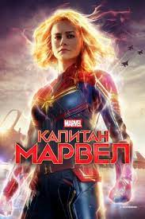
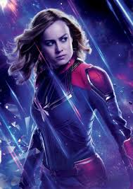

Бріа́нна Са́йдоні Десолне́рс (англ. Brianne Sidonie Desaulniers; нар. 1 жовтня 1989, Сакраменто (Каліфорнія)) — американська актриса та співачка, володарка премії Оскар (2016) як найкраща акторка. Відома ролями у фільмах «Ґрінберґ», «Скотт Пілігрим проти світу», «Мачо і ботан». У 2013 за роль у драмі «Короткий термін 12» була номінована на премії Незалежний дух і Critics' Choice.
У 2015 році, вона отримала загальне визнання за виконання ролі Джой «Ма» Ньюсом у драматичному фільмі «Кімната», з'явилася у комедії «Дівчина без комплексів». За акторську роботу у «Кімнаті» удостоєна Золотого глобуса, премії Critics' Choice, а також номінована на премію БАФТА, Незалежний дух, премію Гільдії кіноакторів США та «Оскар» за найкращу жіночу роль.
Ларсон народилася у Сакраменто (Каліфорнія). Її батьки, Сільвен і Гізер Десолнерси, були хіропрактиками. Батьки розлучились, коли Брі була дитиною і вона разом із матір'ю та сестрою переїхали до Лос-Анджелеса. Вона навчалась акторській майстерності в American Conservatory Theater у Сан-Франциско. До цього вона навчалася вдома.
«Капіта́н Ма́рвел» (англ. Captain Marvel) — американський супергеройський фільм про Керол Денверс, персонажа коміксів видавництва Marvel Comics, спродюсований Marvel Studios з Walt Disney Studios Motion Pictures як дистриб'ютор, і двадцять перша стрічка в рамках Кіновсесвіту Marvel (КВM). Фільм написаний і знятий Анною Боден і Раяном Флеком, тоді як Женева Робертсон-Дворет і Жак Шеффер також виступили співавторами сценарію. Брі Ларсон грає роль Денверс, наряду з Семюелем Л. Джексоном, Беном Мендельсоном, Джимон Гонсу, Лі Пейс, Лашана Лінч, Джемма Чан, Аннетт Бенінг, Кларком Греггом і Джудом Лоу. Історія, дії якої відбуваються в 1995, розповідає про Денверс, яка стає Капітаном Марвел після того, як Земля опиняється в центрі галактичного конфлікту між двома інопланетними світами.
Виробництво фільму розпочалася ще в травні 2013, а в жовтні 2014 він був оголошений офіційно, що зробило його першим супергеройським жіночим сольним фільмом Marvel Studios. Ніколь Перлман і Мег Лефов були найняті як письменницька команда у квітні наступного року після представлення своїх роздільних бачень персонажу. Історія запозичує елементи з сюжетної арки Роя Томаса «Війна кріі та скруллів» (1971). Ларсон була оголошена у ролі Денверс на фестивалі San Diego Comic-Con у 2016, а Боден і Флек зайняли режисерське крісло у квітні 2017. Робертсон-Дворет незабаром зайнялася написанням сценарію і на початку фільмування було додано решту складу. Натурні зйомки розпочалися в січні 2018, тоді як основні зйомки розпочалися в березні у Каліфорнії та завершилися в липні 2018 у Луїзіані. Джексон і Грегг — які, наряду з іншими, повторюють свої ролі з попередніх фільмів КВM — були «омолоджені» за допомогою комп'ютерної графіки на стадії постпродукції.